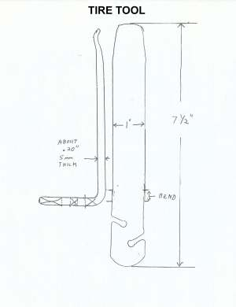
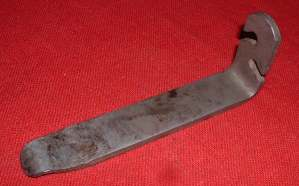
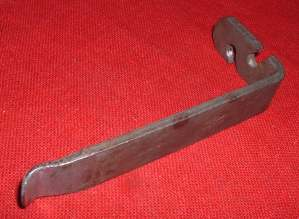
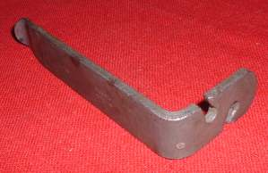
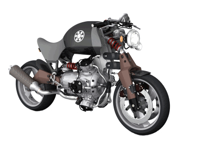
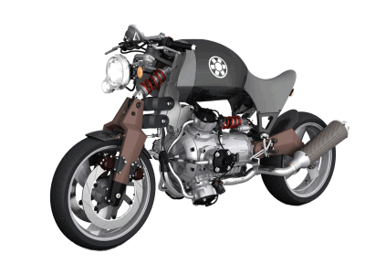

¶ Here is a quaint little tool I bought at a junk yard about 40 years ago. I have never seen another one quite like it. I'm sure it came from some Japanese motorcycle's tool kit. I should see them all over the place but no, I have not.
It always seem that I need an extra hand and tire tool when I first lever the tire bead over the rim of the wheel. This little tool is that extra hand. I love this little tool. Simple thrills for simple minds, I guess.
I don't know where to buy one but you can make one real easy. A 1"x1/4"x7 1/2" piece of steel strap, a drill, a hack saw, a file or electric grinder, and this would be a perfect first Custom Tool. If you want to get real fancy add a propane torch to heat it up to make bending easier. Oh yeah, a vice too, which you should have all ready, and you are good to go.
 Custom Tire Tool Specifications |
 Custom Tire Tool View 1 |
 Custom Tire Tool View2 |
 Custom Tire Tool View 3 |


 |
 |
Copyright © 1999-2002 dansmc.com. All rights reserved.